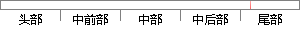

单元测试代码如图6-1所示：
片段位置图

相似结果|
相似片段 1：单元测试，需要经过几个步骤，具体如图 6-1所示。编写原始程序 编写测试程序分别build两份代码，形成pkg包安装pkg包到Android上运行测试，查看结果图 6-1 单元测试的流程APP有许多单元
相似片段 2：都必须严格按照这套测试方案进行程序开发了测试。具体的测试总流程如图 6-1所示。开发人员 项目组长 测试人员编写功能代码单元测试代码修改代码提交运行单元测试案例自动化测试代码Review成功失败失败
相似片段 3：），如图 6-2 所示，完成单元测试创建工作。55图 6-1 调用单元测试快捷菜单图 6-2 创建单元测试项目 Test(2) 双击 Test 测试项目下的 ModuleCommTest.vb 文件
相似片段 4：6.2 系统重要模块测试6.2.1 主界面模块主界面开发完毕后，进行单元测试。经过对此模块的单元测试发现，用户右键单击桌台以外的空白处，也会弹出右键菜单，如图 6-1 所示。并且选中右键菜67单
相似片段 5：6.2 系统的测试框架在系统单元开发阶段(设计和代码编写)、组件组装阶段（组件集成）和系统完成（可进行安装）后，分别应用了不同的软件测试策略，如图 6-1所示：图 6-1系统测试框架图单元开发阶段
相似片段 6：的快速运行测试。本次单元测试主要根据详细设计中描述的流程，设计典型用例，从不同角度测试功能方面是否满足需求。典型用例的设计，尽可能多的考虑路径分支，从而做到尽可能多的覆盖代码。如表 6-1所示本测试包括
相似片段 7：的管理，可以大量节省人力成本和时间成本。本工程对源代码的管理有以下要求：(1) 在代码的起始部分加入版权声明、文件描述、子系统、模块、文件名、程序修改者以及版本信息。样例如图 6-1 所示；图 6-1代码
相似片段 8：测试流程按照：编码及单元测试、集成测试、系统业务测试、系统安装测、验收测试的顺序来进行。测试整体流程如图6-1所示。图6-1 测试整体流程图编码及单元测试 集成测试 系统业务测试系统安装测 验收测试
相似片段 9：[22]。6.1.3测试过程软件测试的过程如图 6-1所示。单元测试被测模块被 模块集成测试确认测试 系统测试 验收测试交付用户图 6-1 软件测试过程软件测试的过程主要分为四个部分，分别是单元测试
相似片段 10： TestSuite(MeetingServiceTest.class));return suite;}在被测试类上右击鼠标，在弹出的快捷菜单中选择“运行 JUnit测试”，运行结果如图 6-1所示：图 6-1 JUnit单元测试结果图6.2 系统结合测试本系统的结合测试使用 Selenium测试工具完成。
|
※ 片段修改建议 ※
近似词参考：